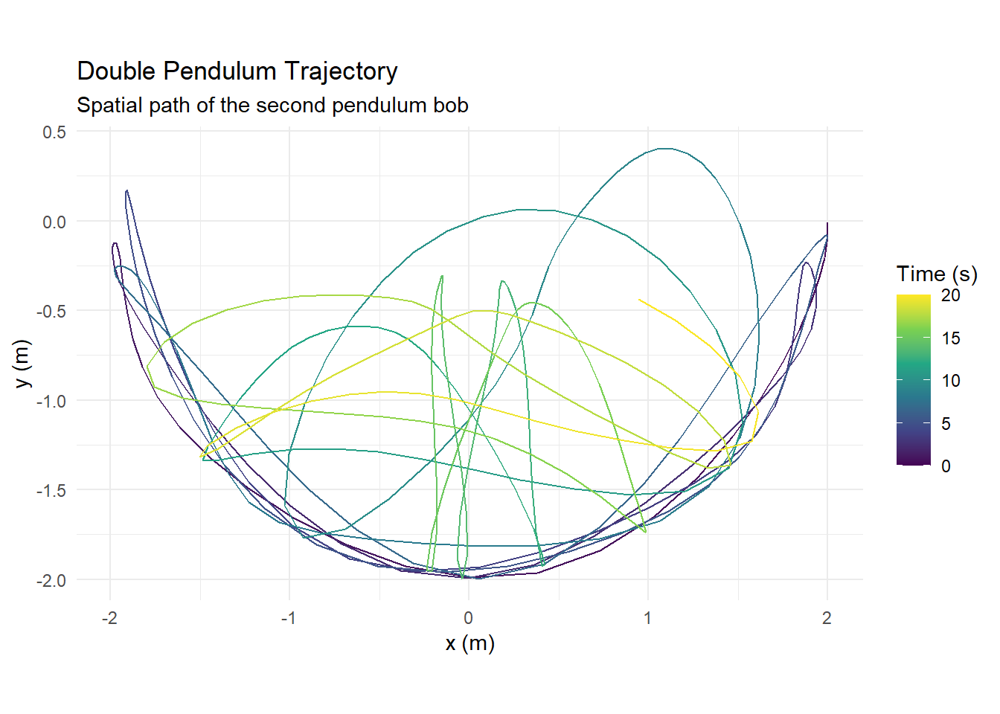
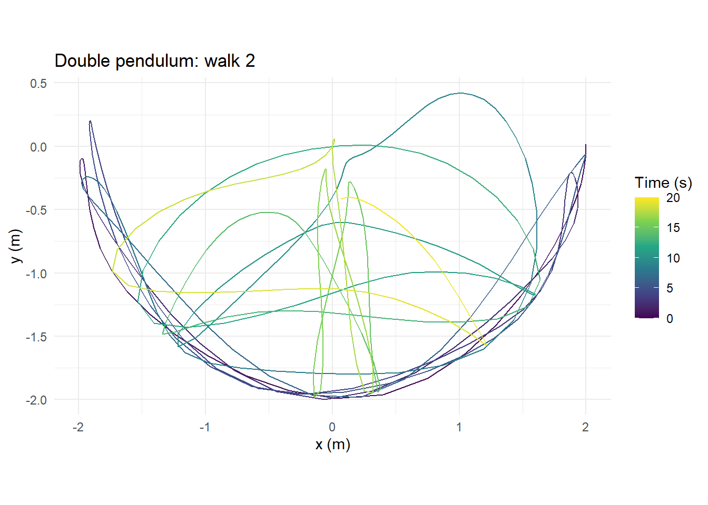
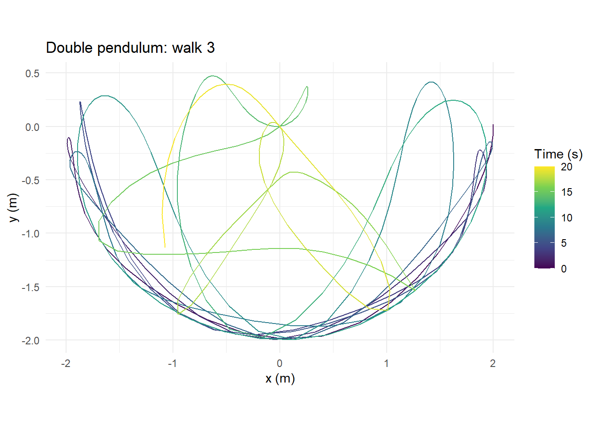

RandomWalker: Custom Walks and Double Pendulum Chaos
Learn how to create custom random walk simulations in R and explore chaotic systems with double pendulum simulations, plots, and animations using RandomWalker.
code
rtip
randomwalker
Author
Steven P. Sanderson II, MPH
Published
September 8, 2026
Keywords
Programming, random walk in R, RandomWalker R Package, random walk simulation R, simulatin in R, chaotic systems in R, double pendulum R, custom random walk R, random walk visualization R, Monety Carlo simulation R, how to create a random walk in R, how to simulate a double pendulum in R, create custom random walk simulations in R, visualize a double pendulum in R with gganimate, visualize a double pendulum with ggplot2
The latest release of RandomWalker is now available on CRAN!
This release adds a couple of new tools that expand what you can simulate and visualize with the package. The two main areas are pcustom random walks and double pendulum simulations.
With custom_walk(), you can define your own step-generating function and let RandomWalker build the walks around it. The new double pendulum tools take things in a different direction, allowing us to simulate and visualize a classic chaotic physical system.
In this post, we’ll look at four functions:
custom_walk()
double_pendulum_walk()
plot_double_pendulum()
animate_double_pendulum()
Let’s take a look.
Getting Started
First, install the latest release of RandomWalker from CRAN:
install.packages("RandomWalker")
Then load it:
library(RandomWalker)
== Welcome to RandomWalker ========================================================
If you find this package useful, please leave a star:
https://github.com/spsanderson/RandomWalker
If you encounter a bug or want to request an enhancement please file an issue at:
https://github.com/spsanderson/RandomWalker/issues
Thank you for using RandomWalker
Some of the double pendulum functionality uses optional packages, so you may also want:
Every step is drawn from a normal distribution with a mean of 0.1.
That small positive mean gives our walks a tendency to move upward over time, although randomness can still send individual walks in very different directions.
Going Beyond One Dimension
custom_walk() supports one, two, or three dimensions.
The other major addition in this release is something a little different.
A double pendulum consists of one pendulum attached to another pendulum.
It sounds simple.
Its behavior isn’t.
Double pendulums are well-known examples of chaotic systems. Very small changes in their starting conditions can eventually produce dramatically different trajectories.
RandomWalker now lets us simulate this directly.
Simulating with double_pendulum_walk()
The new double_pendulum_walk() function simulates a planar, frictionless double pendulum.
The default simulation samples the system every 0.05 seconds for 401 observations, giving us 20 seconds of motion.
The returned tibble contains quite a bit of information:
walk_number
step_number
time
theta1
theta2
omega1
omega2
x1
y1
x
y
Here:
theta1 and theta2 are the pendulum angles.
omega1 and omega2 are their angular velocities.
x1 and y1 describe the position of the first bob.
x and y describe the position of the second bob.
Where Does the Randomness Come From?
There is an important distinction here. The double pendulum isn’t receiving random forces throughout the simulation. Instead, RandomWalker slightly perturbs the initial angles.
The default is:
.angle_sd =0.01
Once those initial conditions are created, the motion follows the deterministic equations of the double pendulum. This gives us a nice way to explore a fundamental idea behind chaos:
Nearly identical starting conditions do not necessarily produce nearly identical long-term behavior.
The function creates a ggplot2 visualization of the spatial trajectory followed by the second bob. The trajectory is colored according to elapsed time, making it easier to see how the system moves through space. Because the result is a ggplot object, you can also customize it using normal ggplot2 tools.
For example:
library(ggplot2)
Warning: package 'ggplot2' was built under R version 4.6.1
plot_double_pendulum( pendulum,.walk =1) +labs(title ="Double Pendulum Trajectory",subtitle ="Spatial path of the second pendulum bob" ) +theme_minimal()

You can also compare individual trajectories:
plot_double_pendulum(pendulum, .walk =1)
plot_double_pendulum(pendulum, .walk =2)

plot_double_pendulum(pendulum, .walk =3)

Remember that these walks began with only small differences in their starting angles. Seeing their paths diverge is where the simulation becomes especially interesting. See the full plot_double_pendulum() documentation.
Bringing the Simulation to Life
A static trajectory shows us where the pendulum traveled. An animation shows us how it got there. The animate_double_pendulum() function creates a gganimate object from the simulation data.
Using the simulation’s delta_time to calculate the frame rate lets the animation correspond to simulated time. This is probably my favorite way to explore the new double pendulum functionality because you can actually watch the chaotic motion develop. See the full animate_double_pendulum() documentation.
Why Add a Double Pendulum to RandomWalker?
You might reasonably ask:
Is a double pendulum really a random walk?
Not in the traditional sense.
A traditional random walk introduces randomness as the process evolves. The double pendulum simulation instead introduces randomness into the initial conditions, after which the equations governing the system are deterministic.
I think that makes it an interesting addition to RandomWalker. It gives us another way to explore the relationship between:
A traditional random walk asks what happens when individual steps are random. The double pendulum asks what happens when the starting point is slightly uncertain but the system itself follows deterministic rules. Those are different ideas, but putting them next to each other can help us build intuition about simulation and uncertainty.
Your Turn!
Now it’s your turn.
Let’s combine the ideas from this release into two small challenges.
Challenge 1: Build Your Own Random Walk
Create a custom step function using a Student’s t-distribution:
my_step <-function() {# Your code here}
Then generate:
10 random walks
250 steps each
2 dimensions
an initial value of 0
Think about what you expect the walks to look like compared with steps generated from a normal distribution.
How quickly do the trajectories begin to look different as you increase the uncertainty in the initial conditions?
Quick Takeaways
This RandomWalker release adds some interesting new possibilities.
custom_walk() gives you much more control over how random steps are generated. Instead of being limited to distributions already included in the package, you can supply your own function and create one-, two-, or three-dimensional simulations.
double_pendulum_walk() adds a different type of simulation: deterministic dynamics beginning from randomized initial conditions.
plot_double_pendulum() makes those trajectories easy to inspect using ggplot2.
And animate_double_pendulum() lets you watch the system evolve over time.
Together, these functions expand RandomWalker beyond predefined random-walk generators and give you more room to experiment with randomness, simulation, trajectories, and chaotic behavior.
Conclusion
One of the main ideas behind RandomWalker has always been making simulation approachable.
You shouldn’t need a large amount of setup code just to experiment with a random process.
With custom_walk(), the package becomes more flexible because you define the step-generating rule.
With the new double pendulum functions, we can also explore what happens when tiny amounts of uncertainty are introduced into the starting conditions of a deterministic system.
If you’ve installed the new release, give these functions a try.
More importantly, change the parameters.
Change the distribution.
Change the starting angles.
Change the amount of perturbation.
Increase the number of simulations.
And see what happens.
That’s often where simulation becomes the most useful.
@online{randomwalker_custom_random_walks_and_double_pendulum_simulations_20260908, author = {Sanderson II MPH, Steven P.}, title = {RandomWalker: Custom Random Walks and Double Pendulum Simulations}, date = {2026-09-08}, url = {https://www.spsanderson.com/steveondata/posts/2026-09-08/}, langid = {en} }